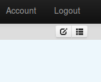

Admittedly I've not checked for a while but I've just noticed there is no longer any way to navigate to my dashboards on emoncms.org. I also notice the lines on the graphs have become dotted ones. Has their been a change on the server ? See http://emoncms.org/bra1n
All the dashboards are set to public and published and I can see they are all still present when I log in and select the dashboard list view. I also notice that all my multigraphs have now got a name of 'null'
Dashboard menu on Emoncms.org disappeared
Submitted by Bra1n on Tue, 20/10/2015 - 06:46»
Re: Dashboard menu on Emoncms.org disappeared
This is the same on my mobile using Chrome and also IE11 on my desktop
Re: Dashboard menu on Emoncms.org disappeared
Yes, the dashboard links have disappeared from my dashboards too, and I get "Page Unresponsive" errors from Chromium.
Re: Dashboard menu on Emoncms.org disappeared
Same issue here with Chrome and edge on win 10 and Chrome on android.
SteveB
Re: Dashboard menu on Emoncms.org disappeared
Strange things are indeed happening, I had to rebuild a multi graph to get all 3 x data set plots back and to get rid of the 1 x remaining plot which had a dotted line
Re: Dashboard menu on Emoncms.org disappeared
Same here
Re: Dashboard menu on Emoncms.org disappeared
Any comment from administrator ?
On my side I cannot see the top menu with Chrome.
Re: Dashboard menu on Emoncms.org disappeared
Hello, sorry for this, yes the dashboard module has been updated yesterday with the version in v9 of emoncms, there are lots of improvements in the v9.0 version so this will be worthwhile :)
The dashboard list should be available from the icon in the top-right:

If it doesnt show, it might be a javascript cache issue, try refreshing your browser cache by doing a full page refresh.
I still need to update the emoncms.org menu system to use the v9 menu system which has a dropdown dashboard list to replace the list in the horizontal bar, but the dashboard list should still be accessible from the list icon pictured above.
Re: Dashboard menu on Emoncms.org disappeared
Yes but only if you're logged in, which means no one else can get to view it
And the issue with multigraphs all losing their names ?
Re: Dashboard menu on Emoncms.org disappeared
And the issue with multigraphs all losing their names ?
In the transition from v8 to v9, the feed naming protocol changed, and therefore it is necessary to revisit your multigraphs and reselect the feed names again.
Paul
Re: Dashboard menu on Emoncms.org disappeared
Looking in to the public dashboard list issue, will hopefully be back with a fix soon.
Re: Dashboard menu on Emoncms.org disappeared
Ok, I have updated the menu system on emoncms.org to the menu system in emoncms v9.0, which provides the public dashboard menu's.
Locally that seemed to work fine and on first sight with data on the main server on emoncms.org it seemed to work with one browser cache refresh.
Checking other dashboards with data coming from our second data storage server Im now experiencing some intermittent but extended delay's in serving the data from the second storage server which I havent been able to get to the bottom of yet but Im working on it.
Re: Dashboard menu on Emoncms.org disappeared
"In the transition from v8 to v9, the feed naming protocol changed, and therefore it is necessary to revisit your multigraphs and reselect the feed names again."
Err, that's a problem. I no longer have any feeds listed on the Feeds page...
Re: Dashboard menu on Emoncms.org disappeared
The intermittent delay's seem to have gone away and speedy data response times have resumed. I will keep an eye on this.
I noticed that the dials and feed values in the v9.0 uses the feed id's rather than feed names to connect the dashboard widgets with the data. This resulted in the dials and feed values not loading without a reconfigure via the dashboard editor.
I've added a fix to allow for some backwards compatibility that uses the feedname if the feed id is not present. Its not ideal as it adds a small overhead on the client to scan through the feed list and it adds a bit of code that could delay the need to reconfigure until later down the road, but I think its probably a better solution than requiring the immediate rebuilding of dashboards.
/var/www/emoncms/Modules/dashboard/widget/dial/dial_render.js added below line 77:
if (feedid===undefined) {
var feedname = $(this).attr("feed");
for (z in associd) {
if (feedname==associd[z].name) feedid = z;
}
}
Should I add this code to the v9.0 branch? or is it better to require a dashboard rebuild on local installs? in the interest of longer term code maintainability.
I've also changed the default setting for skip missing data in the multigraph to skip missing data so that data gaps do not show.
If its convenient to do so, in order to update all the widgets in a your dashboards to use the latest features available in v9, the steps are:
Re: Dashboard menu on Emoncms.org disappeared
Hello Vster, I've just checked your account and there appears to be a good number of feeds. Could you try a browser cache refresh?, logout/login. This shouldnt be needed for the feed list in this update but it would be worth checking
Re: Dashboard menu on Emoncms.org disappeared
IMO - It is quick and easy enough to reselect and save the feeds back again without adding work arounds, and a small price to pay to ensure emoncms's future evolvement.
Paul
Re: Dashboard menu on Emoncms.org disappeared
Hi Trystan,
All seems to be working now thanks! Only needed to add one widget back in, the rest reappeared by themselves. Excellent! :)
However, some of todays figures are definitely out. My car's been charging for about 90mins which should be about 3kWh, but it's showing 4.84kWh. And there's no way the PV has generated 14kWh today, it's been nice but not that nice. Same for export PV and energy used.
Any ideas?
Re: Dashboard menu on Emoncms.org disappeared
@Vster, could you try the reconfigure steps for the dashboard widgets?
Re: Dashboard menu on Emoncms.org disappeared
At first sight mine appears to be working ok now, but when you look closely at the widget values in my dashboards they don't match any of my feed values. As though the dashboards are using somebody elses feed data.
Re: Dashboard menu on Emoncms.org disappeared
Menu is back but it is a little huge not letting editing of dashboards (see attachment) :-(
Re: Dashboard menu on Emoncms.org disappeared
If you want to slim down your menu, un-publish some of your dashboards - that will remove them from the menu quick-access.
Paul
Re: Dashboard menu on Emoncms.org disappeared
Let me also add that:
1) I have to rebuild every dashboard (all connection with data feed are lost)
2) values on dashboards are no more updated in real-time
Re: Dashboard menu on Emoncms.org disappeared
Honestly removing menu voices can be only a workaround to enable editing of dashboard.
Font is really bigger than before and we have also a wonderful star for every voice.
Re: Dashboard menu on Emoncms.org disappeared
1) I have to rebuild every dashboard (all connection with data feed are lost)
You don't have to rebuild every dashboard, you just have to reselect the feed names - (see above)
2) values on dashboards are no more updated in real-time
Sounds like your browser cache needs clearing
Paul
Re: Dashboard menu on Emoncms.org disappeared
3) On Realtime visualizations, clicking on 1 hour interval all data disappear (all the other filters are working fine)
Re: Dashboard menu on Emoncms.org disappeared
@nrgbod, I noticed that too, the feedvalue widget shows the last value updated when you last created/saved the dashboard. Try doing the re-configure steps, that should make them update as normal.
@EmilianoM, issue 3 should be fix now :)
Re: Dashboard menu on Emoncms.org disappeared
I realise that for a lot of people with many public dashboards the new dashboard published menu system means that the top bar is very large. Id be interested in any input on this, would it be worth looking at a way of condensing the starred published dashboards into a dropdown menu?
Re: Dashboard menu on Emoncms.org disappeared
Hi Trystan,
On further investigation, you and Paul were correct, all the feed values on the dash pointed to the first feed value, but the values that were displayed were strangely all different but vaguely sensible - hence my confusion.
I've repointed them to the correct feeds and now it all seems to be working fine with sane values!
I was getting worried there for a moment, but many thanks for your help and for providing such a great system!
V.
Re: Dashboard menu on Emoncms.org disappeared
would it be worth looking at a way of condensing the starred published dashboards into a dropdown menu?
@Trystan I seem to recall during v9 development, that the intention behind the 'starred' dashboards was to create '1-click' access to either one or two of the most frequently accessed dashboards, whilst the remainder could be accessed via the menu > Dashboard > yourdash
I think that this been raised because users have historically ticked 'published' against all of their dashboards, and now when updated to v9, suddenly each of those dashboards have appeared as 'starred' menu items, cluttering their menu bar.
All users need to do is 'unpublish' their dashboards to clear the menu bar, but if users do want to retain one or even two dashboards as 'quick access', they just need to publish them.
It would probably have made more sense if the term 'published' would have been renamed as 'priority'.
Paul
Re: Dashboard menu on Emoncms.org disappeared
4) dial widget is not visible from mobile (Android 6 + Google Chrome) - visible on desktop (Win7 + Google Chrome)
Re: Dashboard menu on Emoncms.org disappeared
@trystan
After thanking you for you effort, my 50 cents about menu
a) number mad people (like me) can have really multiple dashboard linked
b) I was never able to change order of menu voices (once create)
c) dashboard layouts are probably designer considering old menu height
d) now menu bar color is black while other areas are light/configurabile
Proposal
- menu font size configurabile
- menu bar background color configurabile
- introduce concept of order in menu voice list
- introduce 2 level mega drop down menu to save space
Re: Dashboard menu on Emoncms.org disappeared
further to Paul's comments the idea of selecting a couple/handful of favorite dashboards is IMO the better route, and the "published" flag seems to do the trick well, does the published flag serve any other purpose or can it be used exclusively for the menu bar without impact to other functionality?
Also do we have to keep the stars because of the other icons? IMO the stars take up valuable space (2 chars per dashboard link displayed) and don't really convey any meaning if everything has a star.
Paul
Re: Dashboard menu on Emoncms.org disappeared
Also is it possible to NOT allocate the label "unknown" to any un-named dashboards? When a new dashboard is created it is called "no name" by default and that name is normally replaced with the name you wish to see in the menubar, I have been deliberately deleting the "no name" and leaving it blank for some dashboards so they were hidden, Since the v9 changes I have a whole load of dashboards called "unknown" listed under the "dashboards" menu.
+1 for some form of ordering, if I had access to the mySQL tables I would be tempted to "juggle" the dashboard ID's to get them too list in an acceptable order but on emoncms.org that's not an option.
Paul
Re: Dashboard menu on Emoncms.org disappeared
Have pointed all widgets to the correct feeds, they seemed to be showing correct but historic data?
Still having issues with dashboards loading very slowly at times, often failing to load all widgets/graphs. Refreshing the browser usually works.
The pinch to zoom type navigation that now seems to be present in the graphs is far too sensetive, a small pinch can result in the scale changing to show several years of data (mostly blank as i have less than 2 years worth).
Steve
Re: Dashboard menu on Emoncms.org disappeared
Hi, slightly different problems here....appreciate you're probably busy trying to fix things! Existing dashboards appear to work ok, but I can't edit a new one at all, just get the blank pale blue background and can't add anything to it. I've also set up a temporary account to play with output from a weather station (Pi/WeeWX) before integrating it into the main account. I've had problems with some of the feeds going "inactive" after editing them. Deleting and rebuilding them seems to fix it. The online link to docs also appears to be broken.
Thanks
Re: Dashboard menu on Emoncms.org disappeared
Thanks for the feedback on the dashboard's menu, I've sent a message to Chaveiro to discuss this with him as the new dashboard's module is his good work and I dont want to take it off in another direction.
@Derekb, Did you clear your browser cache before creating a new dashboard? sounds like it may be a related issue. What aspect of the feed did you edit? that should not happen.. and which docs link?
Re: Dashboard menu on Emoncms.org disappeared
It would probably have made more sense if the term 'published' would have been renamed as 'priority'.
Or something Like "Make visible in menu" or even "Visible in menu"
Re: Dashboard menu on Emoncms.org disappeared
Can you just roll back to the previous build that worked, this release has obviously not been fully tested
Re: Dashboard menu on Emoncms.org disappeared
Hi thanks, clearing the cache has updated the dashboard editor,which works. Also I can't reproduce now the problem with editing feeds.
Clicking the "Documentation" link under "Setup" just gives me the text
URI not acceptable. No controller 'docs'. (/)
Is that intended for a local EmonCMS?
many thanks
D
Re: Dashboard menu on Emoncms.org disappeared
Hi Trystan,
I think something is still up, I've been watching the dash today and it's behaving strangely.
First thing this morning all the dials had disappeared and so had the feeds (numbers and titles were fine and incrementing). It was like this for a few hours. I flushed the cache, switched back to the Emon tab and the dials were there strangely, but I'd clicked refresh by instinct and the dials disappeared again. Since then randomly some dials reappear/disappear, but refreshing the tab wipes all the dials.
That was all in Chrome, it occured to me to try FireFox, which seems perfect apart from just one of the gauges is a bit slow to reappear after a tab refresh.
Cheers,
V.
Re: Dashboard menu on Emoncms.org disappeared
I'm afraid that this thread has run off-topic, as it started discussing issues encountered following the emoncms.org update, but has now moved into 'future developments' and perhaps the two should be split, so that any outstanding emoncms.org bugs can be sorted, and not get lost in the thread.
Forgetting future developments/wish lists for a moment, is anyone still having problems with emoncms.org after the update?
Paul
(posted same time as vster's comment)
Re: Dashboard menu on Emoncms.org disappeared
Had a quick look and noticed the dropdown Apps 'My Electric' & 'My Solar&Wind' both appear to point to 'My Electric'
Re: Dashboard menu on Emoncms.org disappeared
Hi Trystan/Paul,
Not sure if anyone has been tinkering with the dashboards but Chrome seems much happier today! :)
Following on from Bra1n's post, I had a look at the apps tab -
In My Electric, I can't click the spanner in either Chrome or FF, so both the values are zero.
In My Solar, I can click the spanner and I've added the correct ID's. In Chrome both the figures and graph appear, but in FF only the top figures appear, the graph is blank and the Direct/Grid show Nan%?
However, it both none of the 1h 18h D W M Y + - < > buttons seem to work either.
So much for browser standards...
Keep the the good work!
V.
Re: Dashboard menu on Emoncms.org disappeared
Thanks guys, everything appears to be working for me today. Experimental weather station feeds from a Pi running WeeWX with the Emoncms extension are all fine too.
I did some confusing testing last night, using my daily dashboard which hasn't changed since May. This has 2 multigraphs and 4 dial widgets. Chrome, IE and Firefox, all with cache and cookies cleared.
Chrome = lower 2 widgets missing, graphs ok
Firefox = all 4 widgets missing, graphs ok
IE = lower 2 widgets missing, lower graph missing
As V says above, so much for standards.
thanks, D
Re: Dashboard menu on Emoncms.org disappeared
Published dashboards appear as quick access star menu. They are just like favorites.
If the user wants to share their dashboard it must be public.
Maybe the 'publish' naming is not the best and that is causing confusion, suggest to change for 'favorite'
SteveB: Issues with slow loading times. Can you show the loading times in chrome press F12, select network then press F5 to refresh.
Derekb: are you having any javascript errors on any browser? Press F12 and look on the console.
Re: Dashboard menu on Emoncms.org disappeared
chaveiro
Graphs, especially involving more than one feed load intermittently,
Sometimes straight away, sometimes 10 to 15 sec delay and sometimes fail to load at all.
Also with the new menu structure how do we modify/create multigraphs?
SteveB
Re: Dashboard menu on Emoncms.org disappeared
I can´t modify elements position, value, etc !!!
Well, I can modify, but I can´t save...
Re: Dashboard menu on Emoncms.org disappeared
The dropdown under '+Extra' then 'Visualization' takes you to the multigraphs
Re: Dashboard menu on Emoncms.org disappeared
Thanks, working now.
I had found the +extra button earlier but it wouldn't display/edit existing multigraphs.
SteveB
Re: Dashboard menu on Emoncms.org disappeared
SteveB, Identify the error on that red lines, it's not visible on the screenshot.
Re: Dashboard menu on Emoncms.org disappeared
Trystan/Paul,
It all seems to be working now! Thanks for your hard work!
While I'm here, I have to add that the family love the new My Solar app!
V.
Re: Dashboard menu on Emoncms.org disappeared
chaveiro
Only a couple of red lines now but multigraph still slow loading.
SteveB
Re: Dashboard menu on Emoncms.org disappeared
Problem not solved , true ?
Still I can´t save changes made in objects position... The black upper zone blocks the buttons...
If I press F12 (I work with Chrome), buttons appear, as you can see in image attached...
Re: Dashboard menu on Emoncms.org disappeared
It's not built to have to much dashboards "published". Go to the dashboard overview and deselect 2 or 3 in the "published" column. You have to use as less space as possible for the dashboard names.
The bootstrap layout seems to have some flaws when there are more published dasboards than expected.
I also mentioned that issue here: http://openenergymonitor.org/emon/node/11009
When you make the browser smaller you actually triggering other design rules and when small enough the dashboard names are hidden and because of that there is enough space again to just have the small black bar.
Regards
Andi
Re: Dashboard menu on Emoncms.org disappeared
What a solution...
Thanks anyway...
Re: Dashboard menu on Emoncms.org disappeared
This was brought up earlier but I don't see answer: What happened to the docs at http://emoncms.org/site/docs? I get only a blank page. Likewise for http://emoncms.org/site/docs/dashboards